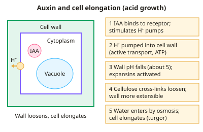

A-level Biology Year 13 · Topic 11
Plant growth regulators
Plant growth regulators shows how plants coordinate growth and respond to their environment without a nervous system.
We will meet the main plant hormones, auxins, gibberellins, cytokinins, ethene and abscisic acid, and see how they control leaf fall, stomata, germination, apical dominance and ripening.
Then we look at how growers use these chemicals commercially, and the practical on how growth substances affect seedlings.
- 4 subtopics
- 149 questions
- Free: 11.1 notes and 10 questions
In this topic
- 11.1Plant hormones: auxins, gibberellins, cytokinins, ethene and abscisic acidFree below · 41 questions
- 11.2Plant responses: leaf abscission, stomatal closure, seed germination, apical dominance and fruit ripeningOpen in Full Marks · 40 questions
- 11.3Commercial uses of plant growth regulatorsOpen in Full Marks · 33 questions
- 11.4Practical: effect of plant growth substances on plant growth and germinationOpen in Full Marks · 35 questions
11.1 · Free notes
Plant hormones: auxins, gibberellins, cytokinins, ethene and abscisic acid

Key points
- Plant growth regulators (plant hormones) are chemicals made in small amounts by cells throughout the plant, not in specialised glands. They affect growth and development, and the effect depends on concentration, the tissue and the sensitivity of the target cells.
- Transport is by diffusion and active transport over short distances and via the phloem (and xylem) over long distances. Ethene is a gas that diffuses through air spaces and into the air.
- Auxins (e.g. IAA) are made in shoot tip meristems and young leaves. They cause cell elongation by the acid growth mechanism: H⁺ is actively pumped into the cell wall, the pH falls (to about 5), expansins loosen the cellulose cross-links, and water enters by osmosis so the wall stretches.
- Auxin effects depend on concentration. Roots are more sensitive than shoots, so a concentration that stimulates shoot elongation inhibits root elongation. Unequal distribution of auxin causes tropisms.
- Gibberellins (GAs) promote stem elongation, seed germination and flowering. They work by breaking down DELLA proteins, which normally inhibit transcription of growth genes, so the genes are switched on. In germination they stimulate amylase synthesis.
- Cytokinins are made mainly in root tips and meristems. They promote cell division (mitosis), delay senescence and promote lateral bud growth by counteracting apical dominance. They are used with auxin in tissue culture.
- Ethene (C₂H₄) is a gas that stimulates fruit ripening, leaf abscission and senescence. It stimulates its own synthesis, which is positive feedback.
- Abscisic acid (ABA) is a stress hormone and mainly inhibitory. It causes stomatal closure in water stress, maintains seed dormancy and inhibits growth. It is antagonistic to gibberellins in germination.
- Hormones act antagonistically (e.g. auxin and ethene in abscission, ABA and GA in dormancy) or synergistically. The ratio of hormones often matters more than the amount of one hormone.
- Required practical: investigate the effect of a hormone (IAA or GA) on seedling or cutting growth. Make a serial dilution (e.g. 10 cm³ stock + 90 cm³ water gives a 10× dilution), and include a distilled water control. Use equal-sized seedlings, control light and temperature, measure length at the start and end, use replicates and calculate mean and % change.
- Exam tip: answers that name the hormone, the effect AND the mechanism (e.g. 'H⁺ pumped into wall, pH falls, expansins activated') gain the marks.
In more detail
- Acid growth hypothesis: auxin stimulates proton pumps; H⁺ in the cell wall lowers the pH, activating expansins that loosen bonds between cellulose microfibrils, so the cell can stretch as it takes up water.
- Concentration curves: the same auxin concentration can promote shoot growth but inhibit root growth, because roots are more sensitive; each organ has its own optimum.
- Gibberellin and dwarf plants: many dwarf varieties lack a functional enzyme for making active gibberellin; spraying them with GA restores normal height.
- Cytokinin–auxin ratio: in tissue culture a high cytokinin to auxin ratio produces shoots, while a high auxin to cytokinin ratio produces roots.
Practice
Plant hormones: auxins, gibberellins, cytokinins, ethene and abscisic acid: 10 questions
Pick an answer to check it, or open the answer for the explanation.
1. Which plant growth regulator is a gas that diffuses through air spaces and between plants?
- Auxin (IAA)
- Gibberellin
- Ethene
- Abscisic acid
Show answer
C: Ethene. Ethene (C₂H₄) is a gas, so it diffuses through tissue air spaces and into the surrounding air. Auxins, gibberellins and ABA are not gases.
2. How do auxins cause cell elongation according to the acid growth hypothesis?
- Digesting the middle lamella with pectinase
- Stimulating mitosis so more cells form
- Raising wall pH so cellulose synthesis speeds up
- Pumping H⁺ into wall; lower pH activates expansins, loosening it
Show answer
D: Pumping H⁺ into wall; lower pH activates expansins, loosening it. Auxin stimulates H⁺ pumping into the wall. The lower pH activates expansins, which loosen cellulose cross-links, so water uptake by osmosis stretches the wall.
3. Which hormone promotes cell division and delays leaf senescence?
- Abscisic acid
- Ethene
- Cytokinin
- Gibberellin
Show answer
C: Cytokinin. Cytokinins stimulate mitosis and delay senescence. Ethene promotes senescence and ABA is inhibitory; gibberellins mainly promote elongation.
4. Which statement about abscisic acid (ABA) is correct?
- It stimulates stem elongation
- It stimulates fruit ripening
- It breaks seed dormancy
- It promotes stomatal closure during water stress
Show answer
D: It promotes stomatal closure during water stress. ABA is the stress hormone that closes stomata in drought. Stem elongation is gibberellin, ripening is ethene, and ABA maintains rather than breaks dormancy.
5. Gibberellins promote stem elongation by:
- Methylating DNA to inhibit transcription
- Binding to the cell wall to loosen cellulose directly
- Activating DELLA proteins to switch on growth genes
- Breaking down DELLA proteins so growth genes can be transcribed
Show answer
D: Breaking down DELLA proteins so growth genes can be transcribed. DELLA proteins inhibit transcription factors for growth genes. Gibberellin triggers DELLA breakdown, removing the inhibition so the genes are transcribed.
6. 10 cm³ of a 100 mg dm⁻³ auxin solution is made up to 100 cm³ with distilled water. What is the final concentration?
- 90 mg dm⁻³
- 9 mg dm⁻³
- 1 mg dm⁻³
- 10 mg dm⁻³
Show answer
D: 10 mg dm⁻³. Final volume is 100 cm³, so the dilution factor is 10. 100 ÷ 10 = 10 mg dm⁻³.
7. A concentration of IAA that stimulates shoot elongation inhibits root elongation. This shows that:
- Auxin is a different molecule in roots
- Roots are less sensitive to auxin than shoots
- Roots are more sensitive to auxin than shoots
- Auxin only affects shoots
Show answer
C: Roots are more sensitive to auxin than shoots. The optimum auxin concentration for roots is much lower than for shoots, so roots are more sensitive and a shoot-stimulating dose becomes inhibitory.
8. Where are auxins mainly synthesised in a plant?
- Mature xylem vessels
- Shoot tip meristems and young leaves
- Root hairs
- Fully expanded leaves
Show answer
B: Shoot tip meristems and young leaves. Auxins are made mainly in the actively dividing shoot tip (apical meristem) and young leaves, then transported down the plant.
9. Which row correctly pairs a hormone with an effect?
- Cytokinin – promotes seed dormancy
- Gibberellin – closes stomata
- Auxin – promotes leaf abscission
- Ethene – promotes fruit ripening
Show answer
D: Ethene – promotes fruit ripening. Ethene stimulates ripening. Cytokinin promotes division, ABA closes stomata and maintains dormancy, and auxin inhibits abscission.
10. Which statement about plant growth regulators is correct?
- Effects do not depend on concentration
- Transported only in the phloem
- Made by cells throughout the plant, not in specialised glands
- Act only at sites distant from where they are made
Show answer
C: Made by cells throughout the plant, not in specialised glands. Plants have no endocrine glands; hormones are made in many tissues. They can act locally or be transported, and their effects are concentration-dependent.
Keep going in Full Marks
Full Marks has 41 questions on Plant hormones: auxins, gibberellins, cytokinins, ethene and abscisic acid (31 more than here), set out in practice levels. You also get notes and 3D models for all 4 subtopics of Plant growth regulators, plus games, timed exams and past papers.
On your exam board
- OCR ATopic 5.1.5: Plant and animal responses
- OCR BTopic 5.3: Control: nervous and hormonal communication
- EdexcelTopic 9: Control systems
- CambridgeTopic 14: Homeostasis, Topic 15: Control and coordination
Not in the AQA specification.